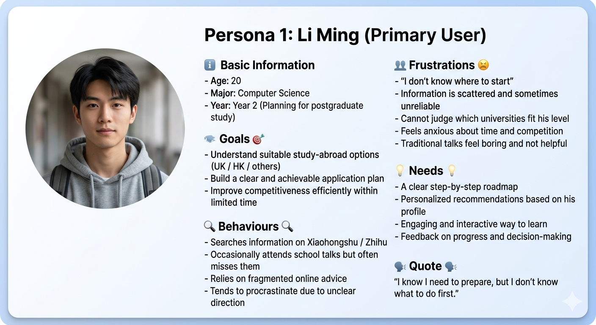
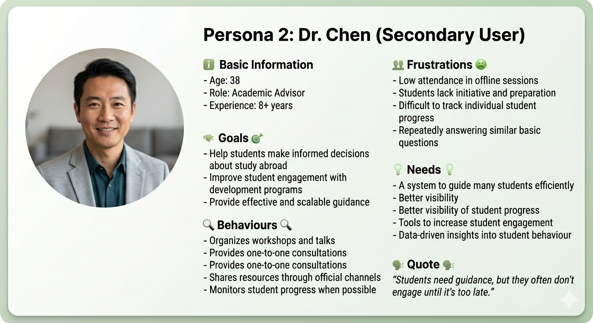
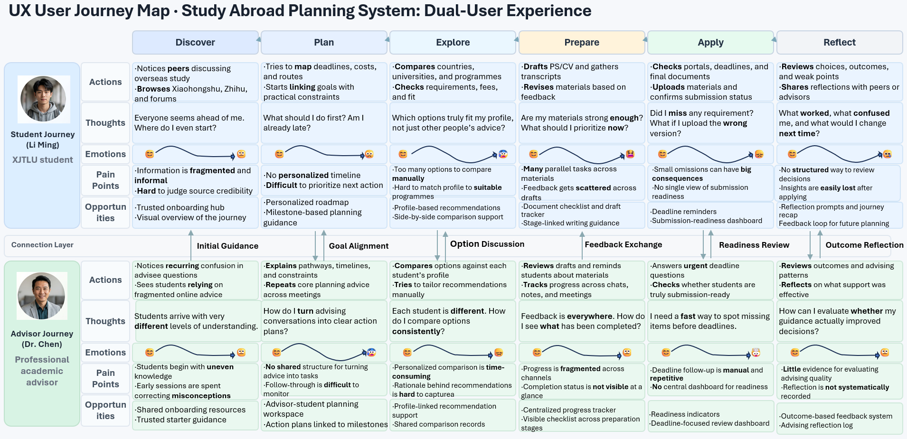

A. Motivation & Research
Journey RPG
A gamified study-abroad planning system for XJTLU students preparing for overseas postgraduate applications.
This portfolio reframes the project as an evidence-based UX case study, showing how we translated a fragmented, high-pressure planning journey into a clearer experience built around progress, guidance, and motivation.
The Why
Problem / Context
For many XJTLU students, study-abroad preparation is not a single task. It is a sequence of research, comparison, document preparation, and deadline management activities that can feel difficult to structure.
The project focuses on a student experience shaped by information overload, unclear priorities, long planning horizons, and emotional uncertainty.
Our design opportunity was to transform this complex process into a guided pathway that still respects academic seriousness while making progress more visible and manageable.
Scattered information sources
Students switch between university websites, social media, notes, and peer advice with no unified planning structure.
Invisible progress
Long-term goals such as applications or language tests provide little short-term feedback, which reduces momentum.
High-stakes comparison work
Comparing destinations, courses, deadlines, and requirements creates cognitive load and decision fatigue.
Uneven support and confidence
Students may receive advice from many channels, but not always at the right time or in the right format for action.
Academic Gap Analysis
The Gap – Academic Papers
Paper 1
Learn, Earn, and Game on: Integrated Reward Mechanism Between Educational and Recreational Games
What it did well
- Makes rewards feel actionable by letting value move beyond a single learning task.
- Shows that motivation grows when progress unlocks something users can actually use.
- Suggests a stronger reward loop than isolated points, badges, or completion marks.
What it missed
- Depends on a two-system ecosystem that is too heavy for a lightweight web product.
- Locks the experience to a specific game metaphor, reducing flexibility for study-abroad planning.
- Leaves a gap around sustained motivation after the novelty of reward transfer fades.
Paper 2
Investigating the Implementation and Effects of Personalized Gamification in Education
What it did well
- Frames personalisation as a core engagement driver, not a decorative add-on.
- Supports richer user profiles that can shape tasks, feedback, and reward pacing.
- Points toward adaptive journeys that respond to user behaviour over time.
What it missed
- Requires data and modelling complexity beyond many small product teams.
- Gives limited direction for simple rules-based personalisation that can ship quickly.
- Focuses on learning performance more than planning confidence, decision clarity, or emotional support.
Paper 3
CareerPooler: AI-Powered Metaphorical Pool Simulation Improves Experience and Outcomes in Career Exploration
What it did well
- Replaces linear guidance with exploratory pathways that better match messy career decisions.
- Uses visual simulation to make abstract choices easier to compare and reflect on.
- Shows how narrative feedback can turn system output into meaningful guidance.
What it missed
- Combines AI, simulation, and interaction design in a way that raises build and maintenance cost.
- Exploratory interfaces may overwhelm users who need direct next-step guidance.
- Leaves opportunity for simpler interaction patterns that preserve exploration without high cognitive load.
Paper 4
Innovation in Education: Developing and Assessing Gamification in the University of the Philippines Open University Massive Open Online Courses
What it did well
- Shows that familiar game elements can create visible momentum with low implementation cost.
- Uses progress feedback as a lightweight way to make participation feel measurable.
- Offers a practical model for integrating gamification into an existing learning platform.
What it missed
- Leans on extrinsic rewards, creating a risk of shallow or short-lived engagement.
- Keeps the interaction flow mostly linear, with limited room for discovery or choice.
- Leaves a design gap around deeper motivation when badges and leaderboards stop feeling meaningful.
Product / Competitor Analysis
Commercial Products and Market Gap
1️⃣ Habitica
https://habitica.com/static/home
🧠 What
Habitica is a task management application that transforms real-life tasks—such as studying, daily routines, and work—into an RPG-style experience, using game mechanics to motivate users to complete real-world tasks.
🕹 How it works
- Users create an account and customise a character
- Add tasks (Habits / Dailies / To-do)
- Complete tasks to earn experience points (XP) and coins
- Level up the character and unlock equipment or skills
⚙️ Core Features
- Task management system (Habits / Dailies / To-do)
- RPG character progression system (levels, equipment)
- Reward and punishment mechanism (completion vs non-completion)
- Team-based tasks (Party / Quest)
✅ Strengths
-
Strong behavioural motivation
Directly links real-world tasks with game rewards, improving execution
-
Clear structure
Tasks are well categorised, making long-term goals easier to manage
-
Strong sense of immersion
Character progression helps sustain user engagement
❌ Limitations
-
Lacks content guidance
The system does not tell users what they should do; it only records tasks
-
No decision support
It cannot help users make complex choices, such as study-abroad planning
-
Limited personalisation
All users follow the same mechanism, with no differentiated pathways
👉 Relevance to our project
Habitica solves the problem of execution, but not the problem of decision-making.
Our system = decision-making + execution
2️⃣ Classcraft
http://hmhco.com/classcraft
🧠 What
Classcraft is an educational platform that turns the classroom into an RPG game environment, using game mechanics to improve student engagement while allowing teachers to monitor student performance.
🕹 How it works
- Teachers create courses and classes
- Students choose a role (warrior / mage / healer)
- Complete classroom tasks to gain XP
- Teachers manage student behaviour through the backend system
⚙️ Core Features
- RPG role system
- Classroom tasks and reward mechanisms
- Teacher dashboard (monitoring system)
- Team collaboration mechanics
✅ Strengths
-
Complete gamified system
Transforms the learning process into a structured game experience
-
Strong teacher monitoring
Allows teachers to track student behaviour and progress
-
Improves classroom participation
Increases interaction and learning motivation
❌ Limitations
-
Teacher-led structure
Students cannot use it independently
-
Lacks personalised pathways
All students receive a similar experience
-
Does not support complex decisions
Designed for classroom tasks, not life-planning scenarios
👉 Relevance to our project
Classcraft is a teacher-driven system.
Our system = student-led system + management side
3️⃣ Duolingo
https://careers.duolingo.com/
🧠 What
Duolingo is an application that helps users learn languages through gamified learning mechanisms, and is one of the most successful gamified education products today.
🕹 How it works
- Choose a language course
- Complete short tasks (multiple choice, translation, etc.)
- Earn XP and maintain a streak
- Unlock new levels
⚙️ Core Features
- Bite-sized learning tasks
- XP and level system
- Streak mechanism
- Immediate feedback
✅ Strengths
-
Very strong user engagement
Uses streaks and rewards to keep users active
-
Fits fragmented time use
Each task is short and easy to complete
-
Immediate feedback
Improves learning efficiency
❌ Limitations
-
Does not support complex learning goals
Mostly suitable for structured knowledge acquisition
-
Limited real-world action transfer
Learning does not necessarily lead to application
-
Limited personalisation
The learning path is relatively fixed
👉 Relevance to our project
Duolingo is learning-driven.
Our system = decision-driven + action-driven
4️⃣ Unifrog
https://www.unifrog.org/
🧠 What
Unifrog is a platform that helps students with university and career planning, and is widely used by schools to support university applications and career pathways.
🕹 How it works
- Schools provide student accounts
- Students fill in personal information
- Browse universities and programmes
- Track application progress through checklists
⚙️ Core Features
- University and programme database
- Application progress management (checklist)
- Personal planning tools
- Teacher monitoring system
✅ Strengths
-
Systematic information structure
Provides comprehensive study and career planning information
-
Clear task management
Helps students organise the application process
-
Supports school administration
Teachers can monitor student progress
❌ Limitations
-
Lacks gamification
The user experience is relatively dry
-
Low engagement
Students may easily stop using it
-
Lacks emotional and motivational design
Does not reduce application anxiety
There is a common tension in study-abroad planning between maintaining professional credibility and creating an engaging experience.
👉 Relevance to our project
Unifrog is professional but lacks experience design.
Our system = professionalism + gamified experience
🎯 Market Gap
Current gamification research and existing commercial products share four major limitations:
- They rely too heavily on generic game elements
- They do not adapt well to high-stakes, long-term decision-making scenarios such as study-abroad planning
- They overlook individual differences and changing motivation over time
- They fail to balance the professional seriousness required for educational planning with the engagement and enjoyment needed to sustain participation
As a result, existing systems cannot effectively support students through the full journey from Year 2 exploration to Year 3 execution in postgraduate study-abroad planning.
Stakeholders / Personas
Primary and secondary users in the planning ecosystem
Primary User
🎯 Goals / frustrations / needs

Secondary User
🧭 Goals / frustrations / needs

B. User Requirements
User journey evidence and key requirements derived from literature
User Journey Map
The journey map stays inside the requirements module

Key Requirements derived from literature
Exact requirement wording grouped by theme
Theme 1. Reward Mechanism 🎮
Key requirement 1 🎯
The system must support cross-context reward usage inside the same web app, so that rewards earned in one activity can be redeemed in multiple scenarios, such as personalised avatars, study-abroad material templates, or alumni consultation opportunities.
Key requirement 2 🎯
The system must combine extrinsic rewards with intrinsic motivators, such as a sense of challenge, personalised progress feedback, and social recognition, instead of relying only on ranking-based participation.
Theme 2. Personalisation 🧠
Key requirement 3 🎯
The system must build a lightweight multi-dimensional user profile, including academic stage, postgraduate goal, and information preference, so that different users can receive different content, such as Year 2 university exploration and Year 3 application material guidance.
Key requirement 4 🎯
The system must support lightweight dynamic adjustment rules, using user behaviour such as quiz accuracy or participation frequency to adjust the difficulty or sequence of later tasks.
Theme 3. Interaction Experience 🎯
Key requirement 5 🎯
The system must support non-linear exploratory interaction, such as study-abroad pathway simulation, random event triggers, and branching decision-based activities, so that users learn through choice → feedback → adjustment.
Key requirement 6 🎯
The system must provide AI-assisted narrative feedback to explain the meaning and possible impact of the user’s actions, for example explaining how completing an IELTS task may improve competitiveness for UK applications.
Theme 4. Data & Tracking 📊
Key requirement 7 🎯
The system must track task completion rate, reward earning and spending, content viewing time, and interaction frequency, rather than only whether the user joined an activity.
Key requirement 8 🎯
The system must provide visualised learning progress feedback for both students and teachers, such as personal study-abroad preparation progress bars and class-level participation summaries.
Theme 5. Feasibility & Lightweight Design ⚙️
Key requirement 9 🎯
The system must prioritise modular, low-cost gamification elements such as badges, leaderboards, and progress bars that can be integrated directly into the web app.
Key requirement 10 🎯
The system must maintain low cognitive load, keeping complex personalisation logic in the background while offering prompts and guidance to support both students and teachers.
Evidence of Life
Progress evidence gallery
Evidence of Life 01
Evidence of Life 02
Evidence of Life 03
C. Ideation & Alternatives
Concept generation, comparison, and early prototype framing
Crazy Eights
Early ideation used fast sketching around focused design questions
Design questions
How might progress feel visible?
How might planning feel less overwhelming?
How might guidance stay credible and motivating?
The sketching phase tested different mental models, including map-based progression, checklist dashboards, and advisor-linked milestone flows.
Crazy 8
Crazy 8 Sketch Set
1. Quest map
2. Dashboard cards
3. Calendar-first view
4. Advisor dashboard
5. Comparison matrix
6. Level progression
7. Preparation hub
8. Reward feedback
Design Alternatives
Three directions were compared before the final concept was selected
A
Linear checklist dashboard
A structured task manager focused on deadlines, documents, and completion states.
- Very clear and practical.
- Low emotional engagement.
- Feels similar to existing productivity tools.
B
Journey RPG map
A guided pathway that treats preparation as a series of meaningful stages, quests, and readiness milestones.
- Balances motivation with structure.
- Makes progress and direction visible.
- Supports both exploration and action.
C
Social planning hub
A community-led approach centred on peer stories, shared tips, and collaborative support.
- Useful for reassurance and experience sharing.
- Harder to maintain quality and consistency.
- Less suitable for clear task sequencing.
Why B was chosen
Option B offered the strongest balance of motivation, structure, and academic credibility
The Journey RPG direction retained the seriousness of application planning while introducing a clearer sense of progression than Option A and a more dependable structure than Option C.
Low-Fi Prototype
Early wireframes and link-ready placeholder area
Low-Fi
Low-fidelity wireframes
Low-fi wireframe space for screen flow, layout, and information priority
Low-Fi Link
Low-fi prototype / Figma link area
D. Technical Implementation
Architecture and prototype delivery for the final web-based coursework scope
System Architecture
A simple front-end structure supports a clear and readable case-study presentation
The coursework site is intentionally lightweight. The emphasis is on semantic structure, responsive layout, and a strong visual hierarchy rather than complex interaction logic.
Content Layer
Case-study sections, evidence summaries, and future asset slots.
Presentation Layer
Responsive CSS system using reusable cards, grids, and section styles.
Asset Layer
Journey maps, persona boards, sketch boards, prototype exports, and contribution evidence.
index.htmlholds the complete single-page portfolio structure.style.cssdefines the visual system, component styling, and responsive layout.persona/,JourneyMap/, andassets/images/provide the current visual assets.
High-Fi
High-fidelity prototype
High-fi interface space for polished UI screens and interaction states
Live URL
Live prototype / deployed URL area
E. Evaluation & Reflection
Testing, refinement, reflection, and final team contribution record
Usability Testing
Evaluation focuses on what the concept communicates well and what still needs refinement
Method
Peer walkthroughs
Used to test whether the journey structure and page hierarchy feel understandable.
Method
Heuristic review
Used to assess clarity, consistency, and whether gamified elements remain appropriate.
Method
Content critique
Used to identify where task guidance and comparison information still need sharpening.
Findings
01
The journey metaphor improves engagement, but users still need direct access to deadlines and next actions.
02
Comparison support is essential because motivation alone does not reduce decision complexity.
03
Playful elements are most credible when paired with explicit requirements and advisor checkpoints.
Iterative Refinement
Strengthen progress visibility
Add clearer stage completion states and a stronger sense of readiness.
Clarify comparison workflows
Support shortlisting, criteria weighting, and requirement review more directly.
Refine reward intensity
Keep feedback motivating, but avoid visual elements that feel too game-like for academic planning.
Iterative Refinement
Before / After visual comparison area
Before
After
Final Reflection
The process highlighted both the promise and the limits of gamified planning
Learning
Designing for motivation requires structural clarity first
The most valuable design move was not adding playful visuals, but re-organising the journey into a form that users can understand and act on.
Limitations
The concept still needs richer real-world validation
Future iterations should include deeper user testing, higher-fidelity task flows, and stronger evidence around how students compare options over time.
Ethics and AI use
Playful systems must remain transparent, supportive, and accountable
Any AI-assisted content, planning suggestions, or design support should be checked against user evidence, course expectations, and the risk of oversimplifying high-stakes decisions.
Individual Contributions
Team record
| Member | Student ID | Contribution Focus |
|---|---|---|
|
Danyi Huang
|
2364444 | 🎯 Contribution focus: concept framing, motivation narrative, and communicating the value of a gamified planning journey. Structured the initial problem space and translated user pain points into a clear and engaging design vision, supporting early-stage direction setting. |
|
Yuxin Zou
|
2361355 | 🎯 Contribution focus: user context synthesis, interaction critique, and improving how complex information is communicated. Analysed user behaviour and refined interaction clarity, ensuring information is structured, accessible, and aligned with user understanding. |
|
Yihan Fu
|
2362845 | 🎯 Contribution focus: journey planning logic, interface structuring, and step-by-step flow refinement. Developed the progression structure and supported the user journey design, ensuring a coherent and intuitive experience across different stages. |
|
Xinlan Wu
|
2361130 | 🎯 Contribution focus: portfolio restructuring, system design integration, and journey interaction logic. Translated literature insights into structured requirements and supported the alignment of user needs, HCI principles, and the final case-study presentation. |